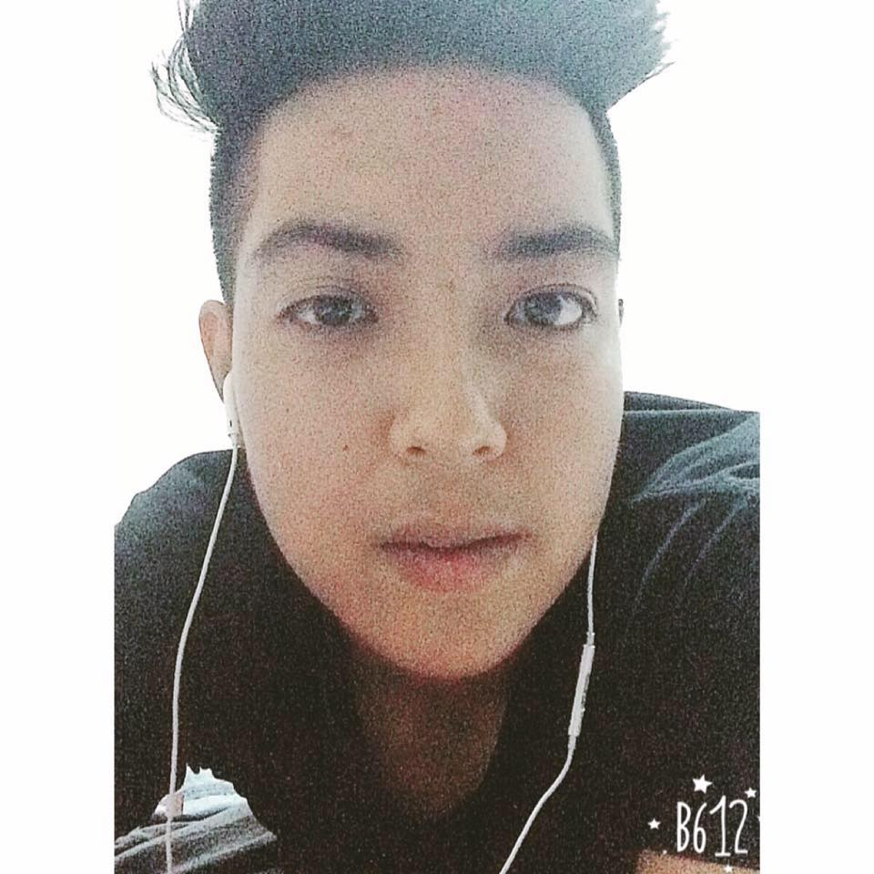

Patitta Noojan

My name is Patitta Noojan
My nickname is Prim
I'm 21 years old.
I come from Songkhla Thailand.
Now, I study at Prince of Songkla University Phuket Campus.
My favorite hobby is photoghaphy.
My name is Patitta Noojan
My nickname is Prim
I'm 21 years old.
I come from Songkhla Thailand.
Now, I study at Prince of Songkla University Phuket Campus.
My favorite hobby is photoghaphy.
The Pulpit Rock is a part of a mountain that looks like a pulpit.
The Pulpit Rock is in Norway.
The Walk is free!